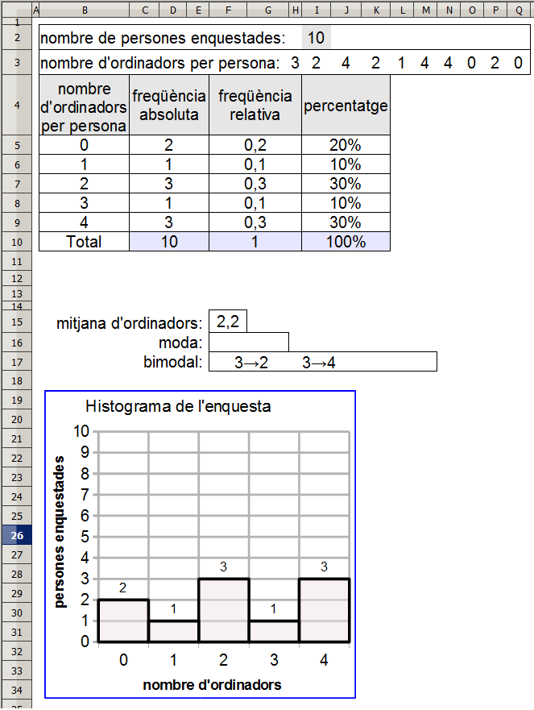

Estadística 1
Presentació gràfica de l'activitat

Funcions que es fan servir en aquesta activitat
- operadors: * / &
Objectiu de l'activitat
Treballar les freqüencies absolutes, relatives, la mitjana, el percentatge, la moda i la bimodal.
Desenvolupament de l'activitat
1. Obrir el calc i canviar el nom de Full1 pel de nombre d'ordinadors per persona.
2. Fer una taula i escriure les dades que es veuen al gràfic de la presentació de l'activitat menys les dades del rang C5:K10
3. Fer que el format de la taula segui semblant al format de la taula.
4. A la cel·la I2 s'escriu el número de persones enquestades.
5. En les cel·les del rang H3:Q3 s'escriu el número d'ordinadors que té a casa cada un dels enquestats.
6. En les cel·les del rang B5:B9 s'escriuen els números d'ordinadors que tenen els enquestats segons l'enquesta.
7. Escriure a la cel·la C5: =COMPTASI($H$3:$Q$3;B5) per calcular el número d'ordinadors per cada persona enquestada.
8. Copiar la cel·la C5 a le cel·les del rang C6:E9.
9. Escriure a la cel·la D10: =SUMA(C5:C9)
10. Escriure a la cel·la G5: =C5/10 per calcular la freqüència relativa.
11. Copiar la cel·la F5 a les cel·les del rang F6:H9
12. Escriure a la cel·la I5: =F5*100 per calcular el tant per cent.
13. Copiar la cel·la I5 a les cel·les del rang I6:K9
14. Escriure a la cel·la J10: =SUMA(I5:I9)
Per calcular la moda i la bimodal, es pot fer el següent:
15. Escriure a la ce·la Q5: =MAX(C5:C9) per saber quina és la màxima freqüència abosula.
16. Escriure a la ce·la L5: =SI(C5=$Q$5;C5;"") per mostrar el valor de la C5 en cas que sigui igual al valor de la cel·la Q5 (la màxima freqüència absoluta). D'aquesta manera es pot saber si el valor de la C5 és moda o no.
17. Escriure a la cel·la M5: =SI(L5="";"";L5&"→"&B5)
18. Copiar la cel·la L5 a les cel·les del rang L6:L9
19. Escriure a la cel·la M5: =SI(L5="";"";L5&"→"&B5) En cas que la cel·la L5 mostri un valor, llavors es concatena el valor d'aquesta cel·la amb el símbol de la fletxa cap a la dreta juntament amb el valor de la cel·la B5. El resultat seria del tipus E→O on E significaria el nombre d'enquestats i O significaria el número d'ordinadors. Per exemple, 3→2 significaria que tres enquestats tenen dos ordinadors cada un d'ells.
20.Copiar la cel·la M5 a les cel·les del rang M6:M9
21. Escriure a la cel·la M10: =COMPTA(L5;L6;L7;L8;L9) per comptar el número de cel·les del rang L5:L9 tenen contingut. En cas que el valor d'aquesta cel·la sigui superior a 1, llavors caldrà fer referència a la bimodal.
22. Es criurea a la cel·la F15: =SUMA(H3:Q3)/I2 per calcular la mitjana d'ordinadors per enquestat. També es podria esciure la fórmula =MITJANA(H3:Q3)
23. Escriure a la cel·la F16: =SI(M10=1;CONSULTA(MAX(L5:L9);L5:L9;M5:M9);"") per mostrar el valor de la moda en casa que només n'hi hagi una.
24. Escriure a la cel·la F17: =(SI(M10>1;M5&" "&M6&" "&M7&" "&M8&" "&M9;"")) per mostrar el valors de les modes en cas que n'hi hagin més d'una.
25. Protegir i amagar les cel·les que convingui.
26. Fer una macro que actualitzi les dades.
27. Comprovar que l'activitat funcioni bé.

|
|

|
|
|